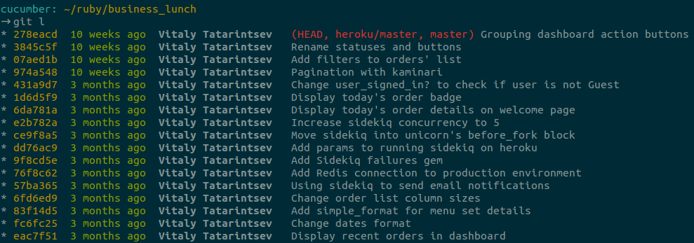

Git: Лучшие практики
Git: Мои Лучшие практики
Вступление
Ваш повседневный набор команд: git commit, git pull и git push?
Вас пугают команды git amend и git rebase?
Попробуем исправиться
Почему история коммитов важна
- История коммитов - это как оглавление в книге.
- Помогает другим понимать содержимое и цель каждого коммита.
Лучшие практики при составлении коммитов
-
Коммит должен содержать только те изменения, которые к нему относятся.
Исправляя две разные ошибки, вы должны разделить их в отдельные коммиты.
Небольшие коммиты проще понять всем остальным. -
Частые коммиты
Это поможет вам создавать небольшие коммиты с одной определенной задачей.
-
Не стоит коммитить незаконченный функционал.
Это значит - не нужно создавать коммит в конце рабочего дня лишь для того, чтобы "не потерять" свои изменения.
И это вовсе не значит, что нужно коммитить всю задачу (feature) целиком.
Нужно просто разбить ее на подзадачи. -
Отдельная ветка для каждой задачи.
Это также поможет выглядеть истории более понятно.
Перечитывайте перед тем, как коммитить
git diff - разница в измененных файлах.
git diff --cached - разница в подготовленных для коммита файлах.
Как составить хорошее описание коммита
Избегайте использования параметра -m (--message) при создании коммита.
Заголовок коммита должен быть коротким описанием, начинающимся с заглавной буквы, не более 50 символов.
Затем следует более детальное описание, отделенное от заголовка пустой строкой.
Границы данного описания должны быть в пределах 72 символов.
Пишите сообщения в повелительном наклонении: используя "fix", "change", "add" вместо "fixed", "changed", "added".
Это соглашение совпадает с сообщениями, генерируемыми командами git merge и git revert.
Поэтапное добавление изменений
git add -p <filename>
y - stage this hunk
n - do not stage this hunk
q - quit; do not stage this hunk nor any of the remaining ones
a - stage this hunk and all later hunks in the file
d - do not stage this hunk nor any of the later hunks in the file
g - select a hunk to go to
/ - search for a hunk matching the given regex
j - leave this hunk undecided, see next undecided hunk
J - leave this hunk undecided, see next hunk
k - leave this hunk undecided, see previous undecided hunk
K - leave this hunk undecided, see previous hunk
s - split the current hunk into smaller hunks
e - manually edit the current hunk
? - print help
Слияние с fast forward и без
Fast Forward - переносит указатель в текущей ветке на последний коммит из целевой
Поведение git merge по умолчанию
Без Fast Forward - явно создаст дополнительный коммит слияния.
git merge --no-ff

Git Rebase
Из справки о git:
"git-rebase - Forward-port local commits to the updated upstream head"
Достаточно понятное описание?
Конечно, нет =)
Git Rebase
Позволяет переписывать историию несколькими способами.
Такими, как: перенос коммитов в начало другой ветки, слияние коммитов и их изменение.
git rebase master

Git Rebase --interactive
git rebase --interactive commits..range
pick 1fc6c95 Patch A
pick 6b2481b Patch B
pick dd1475d something I want to split
pick c619268 A fix for Patch B
pick fa39187 something to add to patch A
pick 4ca2acc i cant' typ goods
pick 7b36971 something to move before patch B
# Rebase 41a72e6..7b36971 onto 41a72e6
#
# Commands:
# p, pick = use commit
# r, reword = use commit, but edit the commit message
# e, edit = use commit, but stop for amending
# s, squash = use commit, but meld into previous commit
# f, fixup = like "squash", but discard this commit's log message
# x, exec = run command (the rest of the line) using shell
#
# If you remove a line here THAT COMMIT WILL BE LOST.
# However, if you remove everything, the rebase will be aborted.
Git Rebase - дополнительная информация
Не рекомендуется применять rebase к уже опубликованным коммитам.
git pull --rebase
Как выглядит (мой) рабочий процесс
- Для каждой основной задачи содается отдельная ветка, используя
git checkout -b имя-ветки - Создаются коммиты для каждой небольшой и независимой подзадачи
- Если что-то забыли, можно подправить последний коммит, используя
git --amend - Если изменения нужно провести в нескольких коммитах, поменять их местами или объединить, используем
git rebase -i - Перед слиянием текущей ветки в основную, производим
git rebase имя-основной-ветки - Сливаем ветки, используя
git merge --no-ff имя-ветки, находясь при этом в основной ветке
Псевдонимы
# ~/.gitconfig
[alias]
st = status
co = checkout
aa = add --all
ff = flow feature
l = !~/.githelpers
dc = diff --cached
rc = rebase --continue
Псевдонимы
#!/bin/bash
HASH="%C(yellow)%h%C(reset)"
RELATIVE_TIME="%C(green)%ar%C(reset)"
AUTHOR="%C(bold blue)%an%C(reset)"
REFS="%C(red)%d%C(reset)"
SUBJECT="%s"
FORMAT="$HASH{$RELATIVE_TIME{$AUTHOR{$REFS $SUBJECT"
git log --graph --pretty="tformat:$FORMAT" $* | column -t -s '{' | less -FXRS
Псевдонимы
git l

Бонус
Git Bisect
git bisect start
git bisect bad # Помечаем текущую версию, как сломанную
git bisect good v1.2.3 # Помечаем коммит с работающей версией
... (git show)
git bisect reset
Выводы
Вопросы
Полезные ссылки
- http://tbaggery.com/2008/04/19/a-note-about-git-commit-messages.html
- http://mislav.uniqpath.com/2013/02/merge-vs-rebase/
- https://www.atlassian.com/git/tutorials/rewriting-history
- http://code.tutsplus.com/tutorials/git-tips-from-the-pros--net-29799
- http://codeinthehole.com/writing/pull-requests-and-other-good-practices-for-teams-using-github/
/